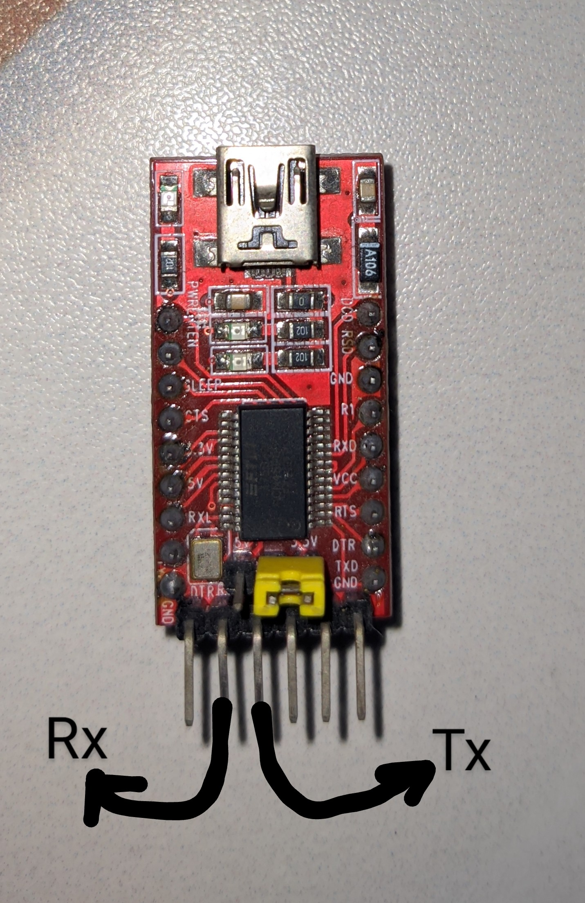
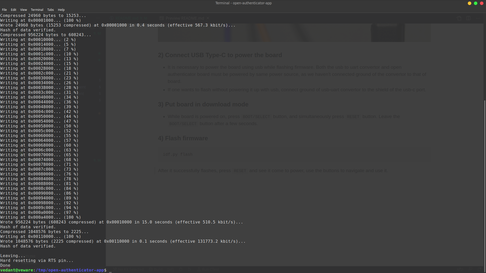
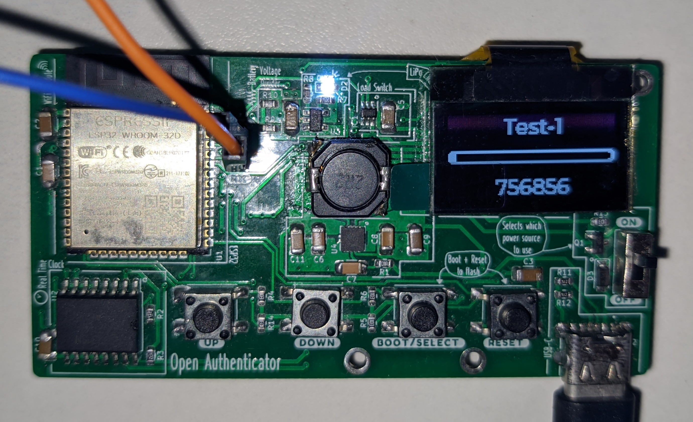

Software Upload
Requirements
- ESP-IDF v4.2 (release/v4.2)
- Open-Authenticator board
- USB-UART convertor board (to flash firmware)
Install instructions are available
here.
Make sure to install v4.2 (step 2 in the given link).
Compile firmware
git clone --recurse-submodules https://github.com/Open-Authenticator/open-authenticator-app.git
cd open-authenticator-app
# activate esp-idf environment (get_idf)
get_idf
# build firmare
idf.py build
Flash firmware
1) Connect USB-UART to open-authenticator UART port
connect as follows
USB-UART----|== RX ==> --- <== TX ==|----Open Authenticator UART port
| |
|== TX ==> --- <== RX ==|


It should look like this after being connected

2) Connect USB Type-C to power the board
- It is necessary to power the board using usb while flashing firmware. Both the usb to uart convertor and open authenticator board must be powered by same power source, as we haven't connected ground of the convertor to that of board.
- If one wants to flash without powering it up with usb, connect ground of usb-uart convertor to the shield of the usb-c port.
3) Put board in download mode
- While board is powered on, press
BOOT/SELECTbutton, and simultaneously pressRESETbutton. Leave theBOOT/SELECTbutton after a few seconds.
4) Flash firmware
idf.py flash
After it successfully flashes, press RESET and see it come to power, use the
buttons to navigate and use it.

